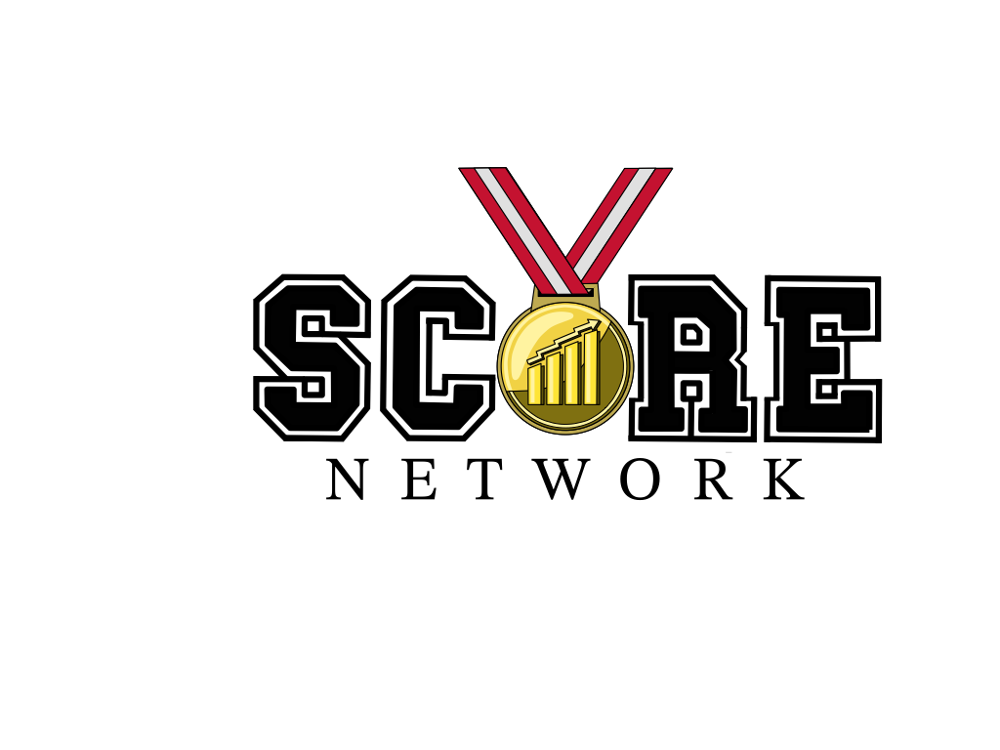
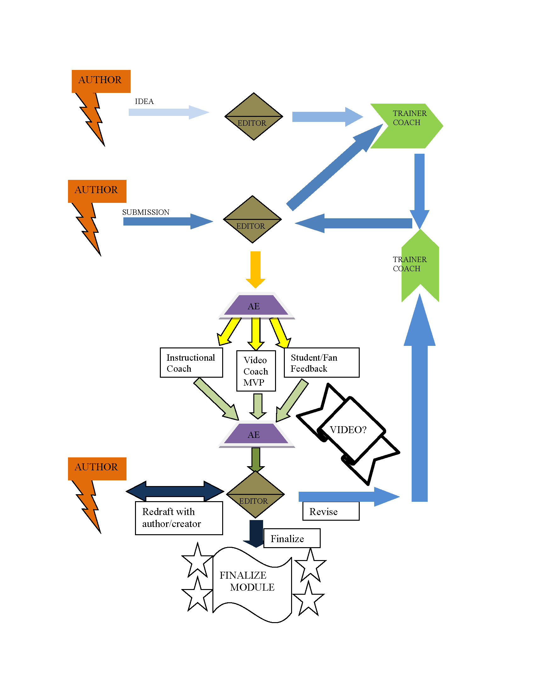

USCOTS 2023 SCORE Breakout Session

09:30 Welcome
- Introductions
- Session webpage https://iramler.github.io/uscots2023_score/
- Useful Tech for Session
- Internet access
- Statistical Software (e.g., R, Minitab, etc.)
09:35 Score (with Data) Network Overview
Goal: Create a national network for developing and disseminating Sports Content for Outreach, Research, and Education in data science and statistics.
Description: This four-year collaborative effort will create a network of educators and 50+ partners from sports teams and industry experts across the country to develop authentic curricular modules to introduce data science and statistics topics via sports applications.
Funding Acknowledgement: NSF Award #2142705. Building a sustainable national network for developing and disseminating Sports Content for Outreach, Research, and Education in data science.
Team: The 2023 Roster
09:40 SCORE Content
- SCORE homepage
- Main page to get access to modules, submit your own, and contact the team.
- Interactive Modules on ISLE
- We’ll also see some specific examples later.
- Data Github repository
- Curates interesting datasets across a variety of sports for use in statistics and data science education. Includes:
- Social Media
09:45 Example SCORE modules
- Module Overview
- Insert Robin’s description here
- Ironman module
- Module is available on ISLE
- Documents are also available on GitHub
- Break into small groups and work through handout
- A few things to consider while working on it
- How would you use this with your students?
- What would you modify to fit your teaching style?
- Regroup to discuss
- Other modules: Break into groups based on interest
- Interactive ISLE Based
- Stolen Bases (ISLE): Testing for Normality
- Marathon (ISLE): Modeling random occurence (using Exponential distribution)
- Downloadable (from GitHub) partial modules
- Lacrosse: PLL vs NLL: Difference in means
- League of Legends: Outlier detection
- PGA: Correlations
- No/low tech version
- Statistical Software required (e.g., Minitab, SPSS, R, etc.)
- NCAA Div I Softball: Joining/Merging Data Tables
- dplyr based (“Using R” or “sketch by hand”)
- SQL (sqlite or duckdb)
- Interactive ISLE Based
10:30 Joining the Network as a contributor
- Content Creator and/or Reviewer
- Submitting a module
- Review Process 
- Coaches are members of the SCORE Network who have extensive experience developing and review modules and can shephard creators through the process of going from ideal to module.
- Involving students
- St. Lawrence University approach
- 0.25 unit course: approximately 2 - 4 students per faculty member, 1 - 2 hour load per week (for students)
- Use GitHub to store “in progress” (but usable) modules until they are ready to be submitted.
- Summer research students to polish existing and create new content.
- St. Lawrence University approach
10:40 Wrap-up
- Signup sheet to be on email list for network
- Check box for interest in being a reviewer